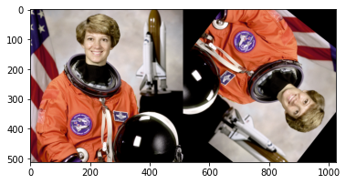

Tutorial: Beacon_aug to MMCV¶
[1]:
# test original mmcv
import mmcv
import numpy as np
from mmcv.utils import deprecated_api_warning, is_tuple_of
from numpy import random
from skimage import data
import matplotlib.pyplot as plt
from skimage import io
from beacon_aug.external.mmcv.mmseg import transforms as mmcv
img = data.astronaut()
obj = mmcv.RandomRotate(prob=1,degree=[128,128])
img_auged = obj( {"img":img})["img"]
plt.imshow(img_auged)
[1]:
<matplotlib.image.AxesImage at 0x7fde446aa210>
[10]:
# test mmcv with Beacon_Aug wrapper
import beacon_aug as BA
image = data.astronaut()
# aug = BA.PhotoMetricDistortion(p=1,library="mmcv")
aug = BA.Rotate(p=1,degree=[128,128],library="mmcv")
image_auged = aug(image=image)["image"].copy()
print("Parameter dictionary:\n\t", BA.to_dict(aug))
plt.figure()
plt.imshow(np.hstack([ image, image_auged]))
Parameter dictionary:
{'__version__': '1.0.3', 'transform': {'__class_fullname__': 'BA_Rotate', 'always_apply': False, 'p': 1, 'deterministic': False, 'library': 'mmcv', 'avail_libraries': ['albumentations', 'imgaug', 'torchvision', 'keras', 'augly', 'mmcv']}}
[10]:
<matplotlib.image.AxesImage at 0x7fa424f68cd0>

[4]:
aug.is_supported_by("mmcv")
[4]:
True
[ ]: